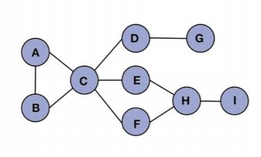

Do you think it's overall more convenient to read from changing the simple connection graph to the edge compression graph? (Yes/No)
A
B
Your Advice:
Submit the Questionnaire
Clear Local Storage
Show Total Result